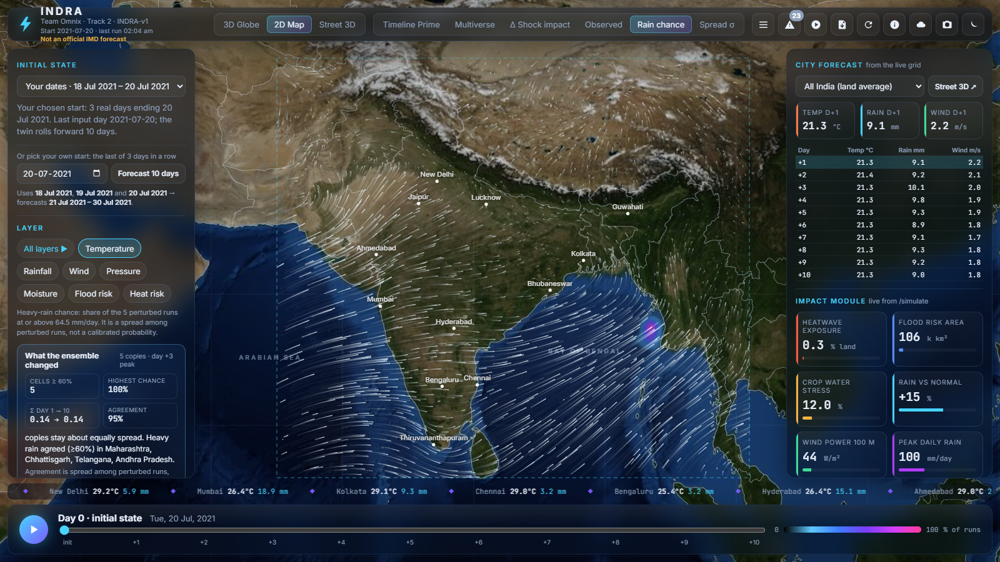

Five futures. One model.
Climate digital twin of India
Team Omnix · Yugaantar DevForge · Track 2

10-day forecast from observed weather.
0 states change. 20 stay as they were.
2021 window · Warm Bay of Bengal shock
0 of 5 copies agree on heavy rain in 5 cells.
20 Jul 2021 · day +3 · 64.5 mm/day (IMD heavy)
Day-8 rain is weaker (-0.042). Not an official IMD forecast.
The monsoon, in five futures.
github.com/channallikrishnasai/indra